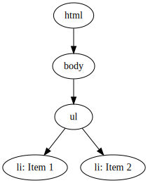

Web components basieren auf drei standardisierten Web APIs:
Web components beinhalten gekapselte Funktionalität. Shadow DOM ermöglicht dies.
<html>
<body>
<ul>
<li>Item 1</li>
<li>Item 2</li>
</ul>
</body>
</html>
wird transformiert zu
→
Shadow DOM ermöglicht es, einen versteckten DOM-Baum einem Element im normalen DOM Tree anzuhängen. Der Baum beginnt mit einer shadow root und kann beliebigen Inhalt enthalten.
const container = document.createElement('div');
container.attachShadow({mode: 'open'});
const text = document.createElement('p');
text.innerHTML = 'Hello from shadow DOM!';
const style = document.createElement('style');
style.textContent = 'p { color: red }';
container.shadowRoot.append(style, text);
JavaScript API zum Erstellen von eigenen HTML Elementen mit gekapselter Funktionalität
Ein Custom Element wird durch einen Selektor und ein Klassenobjekt definiert
class FriendlyGreeting extends HTMLElement {
constructor() {
// Always call super first in constructor
super();
this.attachShadow({mode: 'open'});
const heading = document.createElement('h1');
heading.textContent = 'Hello from custom element!';
this.shadowRoot.appendChild(heading);
}
}
customElements
.define('friendly-greeting', FriendlyGreeting);
<friendly-greeting></friendly-greeting>
Lifecycle callbacks werden bei bestimmten Ereignissen aufgerufen:
Spezielle HTML Elemente zur Erstellung von wiederverwendbarem Markup
<template id="my-greeting">
<p>Hello from HTML template!</p>
</template>
let template = document.getElementById('my-greeting');
let templateContent = template.content;
document.body.appendChild(templateContent);